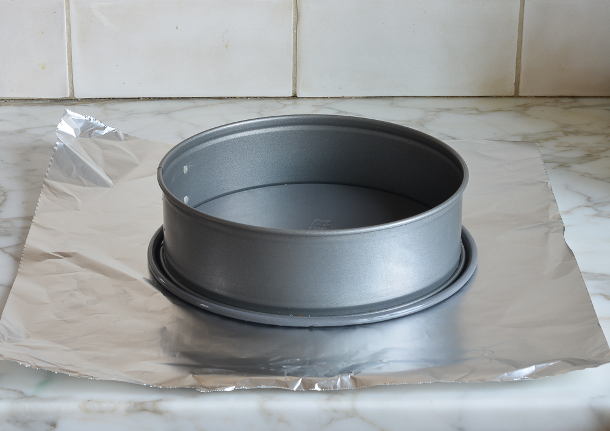

Classic New York Cheesecake
Think making cheesecake is a challenge? Think again! This foolproof recipe delivers a cheesecake so dense,
rich,
and creamy, it rivals those from New York’s most beloved delis—and it’s easy enough for beginners to master.

Now, I know that making cheesecake can seem a little intimidating. It’s a custard dessert that requires
careful
baking in a water bath to prevent cracking and achieve the perfect consistency. But don’t let that daunt
you.
With a few pointers and a tried-and-true recipe, which I’m happy to share with you, even beginners can whip
up a
dense, rich, creamy (and crack-free) cheesecake. This is a tradition-worthy dessert that rivals the best NY
delicatessens. Who knows, maybe it will even help you win over someone special!
What You’ll Need To Make A Classic New York Cheesecake

Ingredient
- A buttery graham cracker crust
- Four 8-ounce bricks of full-fat cream cheese
- Three eggs
- A buttery graham cracker crust
- Sugar
- One cup of our cream
- One teaspoon of vanilla
- One lemon
- A few tablespoons of flour
Cream cheese is the key ingredient, so I recommend using a good brand, like Philadelphia. Moreover, flour
might seem like an unusual addition—not all cheesecake recipes incorporate it—but it’s the secret to
success. A little starch helps prevent the cake from cracking and also makes the filling lighter and
fluffier.
Key Equipment

You’ll need a 9 or 10-inch springform pan and 18-inch
heavy-duty aluminum foil. The springform pan features
sides that can be removed from the base, so you can release the cake easily without having to flip the whole
pan over (this would be a disaster with cheesecake). Springform pans, however, are notorious for leaking.
Since the cheesecake bakes in a water bath, the foil prevents the water from seeping in during baking.
You will also need an electric mixer for whipping up the batter and a large
roasting pan for the water bath.
Step-by-Step Instructions
- Preheat the Oven and Prep the Pan
- Make the Graham Cracker Crust
- Make the Cheesecake Batter
- Bake
- Cool
Step 1: Preheat the Oven and Prep the Pan

Preheat the oven to 375°F.
Wrap the springform pan with one large piece of heavy-duty aluminum foil, covering the underside of the
pan and extending all the way to the top. Repeat with another sheet of foil for insurance. Spray the
inside of the pan with nonstick cooking spray.
Step 2: Make the Graham Cracker Crust

In a medium bowl, combine the graham cracker crumbs, melted butter, sugar, and salt.
Flour might seem like an unusual addition—not all cheesecake recipes incorporate it—but it’s the secret
to
success. A little starch helps prevent the cake from cracking and also makes the filling lighter and
fluffier.

Stir until well combined.

Press the crumbs into an even layer on the bottom of the prepared pan.
Bake the crust for 10 minutes, until set. Remove the pan from the oven and set aside. Reduce the oven
temperature to 325°F.
Step 3: Make the Cheesecake Batter

In the bowl of an electric mixer fitted with the paddle attachment or beaters, combine the cream cheese,
sugar, and flour.

Beat on medium speed until just smooth, about 1 minute. Scrape the bottom and sides of the bowl to be
sure the mixture is evenly combined.

Add the vanilla, lemon zest, lemon juice, and salt; beat on low speed until just combined.

Add the eggs, one at a time, mixing on low speed until incorporated, scraping the bowl as necessary. Mix
in the sour cream.

Pour the batter evenly into the springform pan.
Step 4: Bake

Set the unbaked cheesecake in a large roasting pan. Pour boiling water into the roasting pan until it
comes about one inch up the side of the cake pan. The water bath (also called a bain marie) regulates
the temperature and keeps the cheesecake baking at an even, low heat. The steam/humidity created by the
water bath also protects the cheesecake from drying out and cracking.
Bake until the cake is just set, 1 hour and 30 minutes to 1 hour and 45 minutes. The cake should not look
liquidy at all but will wobble just a bit when the pan is nudged; it will continue to cook as it cools.
Step 5: Cool

Carefully remove the roasting pan from the oven and set it on a wire rack. Cool the cheesecake in the
water bath until the water is just warm, about 45 minutes. Remove the springform pan from the water
bath, discard the foil, and transfer the cheesecake to the refrigerator to cool for at least 8 hours or
overnight.
Remove the sides of the springform pan. You can serve the cheesecake right from the base of the
springform pan. Or, if you’d like to transfer it to a serving platter, run a long, thin spatula between
the crust and the pan bottom, and then use two large spatulas to transfer the cheesecake to a serving
dish. Slice with a sharp knife, wiping the knife clean between slices. Serve with berry sauce, if you like.